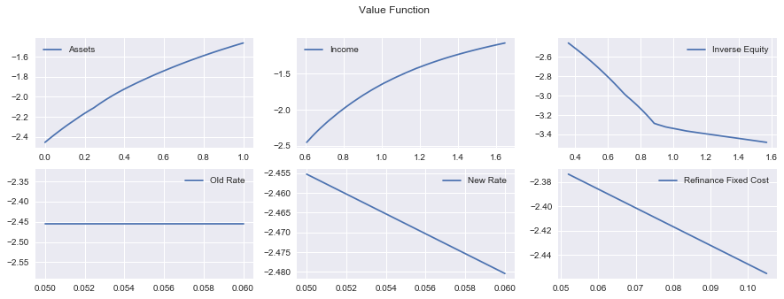
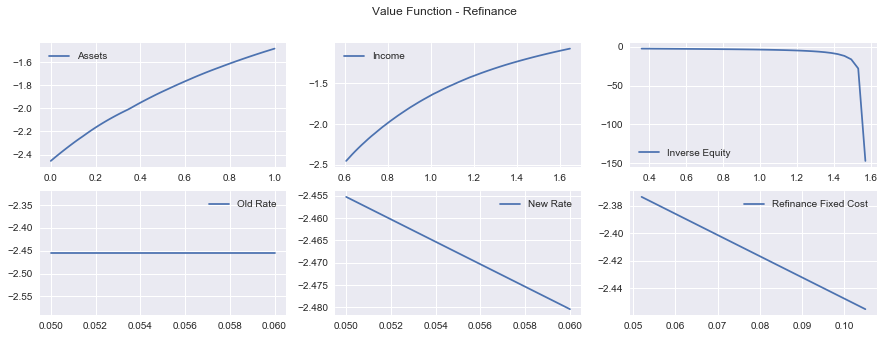
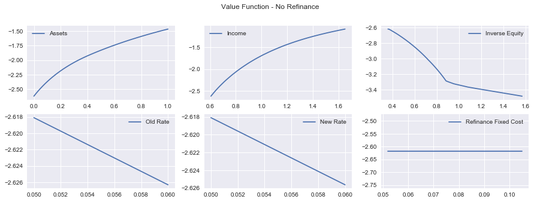
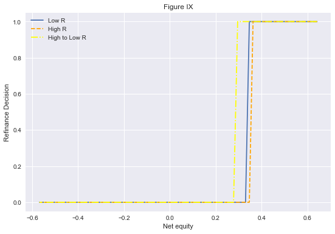

Github Link: https://github.com/HariharanJayashankar/monetary_heter_beraja
Goals of the notebook
- Replicate figure IX - Switching threshold for different refinancing rates
- This is done right after calculating the value functions for borrowers
Replicate figure X - IRFs of consmption and refinance propensity to a mortgage rate decline
import numpy as np import quantecon as qe import matplotlib.pyplot as plt plt.style.use('seaborn') from numba import njit, prange, vectorize# make this 'full_run' if you want to go with full grid sizes param_set = 'full_run'if param_set == 'quick_run': agrid_size = 30 ygrid_size = 30 xgrid_size = 30 elif param_set == 'full_run': agrid_size = 64 ygrid_size = 46 xgrid_size = 60class borrower(): def __init__(self, sigma = 2, # inverse intertemporal elasticity r = 0.03, # rate on assets beta = 0.95, # discount rate rmmin = 0.05, # mortgage rate min rmmax = 0.06, # mortgage rate max rmsize = 2, # number of rms gamma = 0.8, # ltv ratio mu = 0.025, # house price growth (which is equal to income growth) xmin= -1.025, # inverse accumulated equity min xmax = 0.45, xsize = xgrid_size, amin = 0, amax = 1, asize = agrid_size, ymin = -0.5, ymax = 0.5, ysize = ygrid_size, sigmay = 0.1, sigmap = 0.065, yshocksize = 3, pshocksize = 3, Fnodes = np.array([0.105, .052]), probF = np.array([0.875, 0.125]), ): # == assigning paramters to "self" == # (self.sigma, self.r, self.beta, self.rmmin, self.rmmax, self.rmsize, self.gamma, self.mu, self.xmin, self.xmax, self.xsize, self.amin, self.amax, self.asize, self.ymin, self.ymax, self.ysize, self.sigmay, self.sigmap, self.yshocksize, self.pshocksize, self.Fnodes, self.probF) = (sigma, r, beta, rmmin, rmmax, rmsize, gamma, mu, xmin, xmax, xsize, amin, amax, asize, ymin, ymax, ysize, sigmay, sigmap, yshocksize, pshocksize, Fnodes, probF) # == getting grids == # rmnodes = self.rmnodes = np.linspace(rmmin, rmmax, rmsize) ynodes = np.linspace(ymin, ymax, ysize) # xgrid xnodes = np.linspace(xmin, xmax, xsize) # agrid # this is not evenly spaced. More nodes at the lower a values # this is so that the convexity in the value function # is brought out anodes = np.empty(asize) for i in range(asize): anodes[i]=(1.0/(asize-1))*(1.0*(i+1)-1.0) for i in range(asize): anodes[i]=np.exp(np.log(amax-amin+1)*anodes[i])+amin-1.0 self.anodes = anodes # == getting grids and probabilities for shocks == # mc_y = qe.tauchen(0, sigmay, n=yshocksize) self.probyshock = probyshock = mc_y.P[0, :] self.yshocknodes = yshocknodes = mc_y.state_values self.probyshock_cum = probyshock_cum = np.cumsum(self.probyshock) mc_p = qe.tauchen(0, sigmap, n=pshocksize) self.probpshock = probpshock = mc_p.P[0, :] self.pshocknodes = pshocknodes = mc_p.state_values self.probpshock_cum = probpshock_cum = np.cumsum(self.probpshock) # defining the location of the the x value closest to 0 # (used when constructing refinance value function) self.xreset = np.argmin(np.abs(xnodes)) # == creating vectors to find closest match after a shock for a, x and y == # # These are index values for a given shock and a given level of the variable # For example, for a given shock and a given asset value, where is the closest # recorded asset value in my grid which corresponds to the resulting asset value # from the equation xnearest = np.empty((xsize, pshocksize), dtype=int) for i in range(xsize): for j in range(pshocksize): xnearest[i, j] = int(np.argmin(np.abs((xnodes[i] - mu - pshocknodes[j]) - xnodes))) anearest = np.empty((asize, pshocksize), dtype=int) for i in range(asize): for j in range(pshocksize): anearest[i, j] = int(np.argmin(np.abs((anodes[i]*np.exp(-mu-pshocknodes[j])) - anodes))) ynearest = np.empty((ysize, pshocksize, yshocksize), dtype=int) for i in range(ysize): for j in range(pshocksize): for k in range(yshocksize): ynearest[i,j,k] = int(np.argmin(np.abs((ynodes[i]+yshocknodes[k]-pshocknodes[j]) - ynodes))) self.xnearest, self.anearest, self.ynearest = xnearest, anearest, ynearest # "unlogging" x and y nodes self.xnodes = np.exp(xnodes) self.ynodes = np.exp(ynodes) def unpack_params(self): # returns all relevant objects on call return (self.sigma, self.r, self.beta, self.rmmin, self.rmmax, self.rmsize, self.gamma, self.mu, self.xmin, self.xmax, self.xsize, self.amin, self.amax, self.asize, self.ymin, self.ymax, self.ysize, self.sigmay, self.sigmap, self.yshocksize, self.pshocksize, self.Fnodes, self.probF, self.yshocknodes, self.pshocknodes, self.rmnodes, self.xnodes, self.anodes, self.ynodes, self.probyshock, self.probyshock_cum, self.probpshock, self.probpshock_cum, self.xreset, self.xnearest, self.anearest, self.ynearest) def operator_factory(agent): (sigma, r, beta, rmmin, rmmax, rmsize, gamma, mu, xmin, xmax, xsize, amin, amax, asize, ymin, ymax, ysize, sigmay, sigmap, yshocksize, pshocksize, Fnodes, probF, yshocknodes, pshocknodes, rmnodes, xnodes, anodes, ynodes, probyshock, probyshock_cum, probpshock, probpshock_cum, xreset, xnearest, anearest, ynearest) = agent.unpack_params() @vectorize def u(c, sigma): ''' CRRA utility ''' if c < 1e-10: return -np.inf elif sigma == 1: return np.log(c) else: return (c**(1 - sigma))/(1 - sigma) @njit(parallel = True) def T(vold, vrefi, vnorefi, vrefi_out, vnorefi_out, pol_refi, pol_norefi): ''' bellman operator ''' for a_i in prange(asize): for y_i in prange(ysize): for x_i in prange(xsize): for r_0i, r_0 in enumerate(rmnodes): for r_1i, r_1 in enumerate(rmnodes): for f_i, f in enumerate(Fnodes): # getting node values for parallelized loops a = anodes[a_i]; x = xnodes[x_i]; y = ynodes[y_i] # == Refinancing value function == # # getting income if hh decides to refinance inc_ref = (a * (1.0 + r) + y - gamma * r_1 + gamma * (1.0 - x) - f) # getting highest feasible asset choice location on our asset grid idx_ref = np.searchsorted(anodes, inc_ref) max_sofar_refi = -1e10 # looping over feasible asset choices for a_1 in range(idx_ref): a_next = anodes[a_1] util = u(inc_ref - a_next, sigma) # expectations of future value e = 0.0 for ps_i, prob_ps in enumerate(probpshock): for ys_i, prob_ys in enumerate(probyshock): for fs_i, prob_fs in enumerate(probF): e += ( vold[anearest[a_1, ps_i], ynearest[y_i, ps_i, ys_i], xnearest[xreset, ps_i], r_1i, r_1i, fs_i] * prob_ps * prob_ys * prob_fs ) val_refi = util + beta * np.exp(mu * (1 - sigma)) * e if val_refi > max_sofar_refi: max_sofar_refi = val_refi a_refi = a_1 # == No Refinance == # # getting income if hh decides not to refinance inc_noref = ( a * (1.0 + r) + y - gamma * r_0 * x ) # getting highest feasible asset choice location on our asset grid idx_noref = np.searchsorted(anodes, inc_noref) max_sofar_norefi = -1e10 # looping over feasible asset choices for a_1 in range(idx_noref): a_next = anodes[a_1] util = u(inc_noref - a_next, sigma) # expected future value e = 0.0 for ps_i, prob_ps in enumerate(probpshock): for ys_i, prob_ys in enumerate(probyshock): for fs_i, prob_fs in enumerate(probF): e += ( vold[anearest[a_1, ps_i], ynearest[y_i, ps_i, ys_i], xnearest[x_i, ps_i], r_0i, r_1i, fs_i] * prob_ps * prob_ys * prob_fs ) val_norefi = util + beta * np.exp(mu * (1 - sigma)) * e if val_norefi > max_sofar_norefi: max_sofar_norefi = val_norefi a_norefi = a_1 # == allocating values and asset allocations to arrays == # vrefi_out[a_i, y_i, x_i, r_0i, r_1i, f_i] = max_sofar_refi vnorefi_out[a_i, y_i, x_i, r_0i, r_1i, f_i] = max_sofar_norefi pol_refi[a_i, y_i, x_i, r_0i, r_1i, f_i] = a_refi pol_norefi[a_i, y_i, x_i, r_0i, r_1i, f_i] = a_norefi @njit def get_policies(v_refi, v_norefi, pol_refi, pol_norefi): ''' Getting asset saving and consumption policies from value functions ''' # initialize empty "choice" frames refichoice = np.empty_like(v_refi) achoice = np.empty_like(pol_refi) cchoice = np.empty_like(pol_refi) policy_matrix = np.empty_like(pol_refi) for a_i, a in enumerate(anodes): for y_i, y in enumerate(ynodes): for x_i, x in enumerate(xnodes): for r_0i, r_0 in enumerate(rmnodes): # old rate for r_1i, r_1 in enumerate(rmnodes): # new rate for f_i, f in enumerate(Fnodes): # == check which value function is higher == # if v_refi[a_i, y_i, x_i, r_0i, r_1i, f_i] > v_norefi[a_i, y_i, x_i, r_0i, r_1i, f_i]: # refinance refichoice[a_i, y_i, x_i, r_0i, r_1i, f_i] = 1.0 achoice[a_i, y_i, x_i, r_0i, r_1i, f_i] = pol_refi[a_i, y_i, x_i, r_0i, r_1i, f_i] cchoice[a_i, y_i, x_i, r_0i, r_1i, f_i] = ((1.0 + r) * a + y - (gamma * r_1) + gamma * (1 - x) - f - anodes[achoice[a_i, y_i, x_i, r_0i, r_1i, f_i]]) else: # doesnt refinance refichoice[a_i, y_i, x_i, r_0i, r_1i, f_i] = 0.0 achoice[a_i, y_i, x_i, r_0i, r_1i, f_i] = pol_norefi[a_i, y_i, x_i, r_0i, r_1i, f_i] cchoice[a_i, y_i, x_i, r_0i, r_1i, f_i] = ((1.0 + r) * a + y - gamma * r_0 * x - anodes[achoice[a_i, y_i, x_i, r_0i, r_1i, f_i]]) return refichoice, achoice, cchoice @njit def vfi(T, tol=1e-4, max_iter=1000): ''' value function iterator ''' v_in = np.empty((asize,ysize,xsize,rmsize,rmsize,len(Fnodes))) vrefi_in = np.empty_like(v_in) vnorefi_in = np.empty_like(v_in) pol_refi = np.empty_like(v_in, dtype=np.int_) pol_norefi = np.empty_like(v_in, dtype=np.int_) vrefi_out = np.empty_like(v_in) vnorefi_out = np.empty_like(v_in) # Set up loop i = 0 error = tol + 1 while i < max_iter and error > tol: T(v_in, vrefi_in, vnorefi_in, vrefi_out, vnorefi_out, pol_refi, pol_norefi) i += 1 error = max( np.max(np.abs(vrefi_in - vrefi_out)), np.max(np.abs(vnorefi_in - vnorefi_out)) ) vrefi_in, vnorefi_in = vrefi_out, vnorefi_out v_out = np.maximum(vrefi_in, vnorefi_in) v_in = v_out return v_out, vrefi_out, vnorefi_out, pol_refi, pol_norefi, error return T, get_policies, vfi# == initialize agent and operators we need == # hh = borrower() T, get_policies, vfi = operator_factory(hh)%%time v_star, vrefi_out, vnorefi_out, pol_refi, pol_norefi, error = vfi(T, tol=1e-4, max_iter=1000)Wall time: 16.3 s
f, ax = plt.subplots(nrows = 2, ncols = 3, figsize = (15, 5)) ax[0, 0].plot(hh.anodes, v_star[:, 0, 0, 0, 0, 0], label = 'Assets') ax[0, 1].plot(hh.ynodes, v_star[0, :, 0, 0, 0, 0], label = 'Income') ax[0, 2].plot(hh.xnodes, v_star[0, 0, :, 0, 0, 0], label = 'Inverse Equity') ax[1, 0].plot(hh.rmnodes, v_star[0, 0, 0, :, 0, 0], label = 'Old Rate') ax[1, 1].plot(hh.rmnodes, v_star[0, 0, 0, 0, :, 0], label = 'New Rate') ax[1, 2].plot(hh.Fnodes, v_star[0, 0, 0, 0, 0, :], label = 'Refinance Fixed Cost') f.suptitle("Value Function") for i in range(2): for j in range(3): ax[i,j].legend() plt.show()

f, ax = plt.subplots(nrows = 2, ncols = 3, figsize = (15, 5))
ax[0, 0].plot(hh.anodes, vrefi_out[:, 0, 0, 0, 0, 0], label = 'Assets')
ax[0, 1].plot(hh.ynodes, vrefi_out[0, :, 0, 0, 0, 0], label = 'Income')
ax[0, 2].plot(hh.xnodes, vrefi_out[0, 0, :, 0, 0, 0], label = 'Inverse Equity')
ax[1, 0].plot(hh.rmnodes, vrefi_out[0, 0, 0, :, 0, 0], label = 'Old Rate')
ax[1, 1].plot(hh.rmnodes, vrefi_out[0, 0, 0, 0, :, 0], label = 'New Rate')
ax[1, 2].plot(hh.Fnodes, vrefi_out[0, 0, 0, 0, 0, :], label = 'Refinance Fixed Cost')
f.suptitle("Value Function - Refinance")
for i in range(2):
for j in range(3):
ax[i,j].legend()
plt.show()

f, ax = plt.subplots(nrows = 2, ncols = 3, figsize = (15, 5))
ax[0, 0].plot(hh.anodes, vnorefi_out[:, 0, 0, 0, 0, 0], label = 'Assets')
ax[0, 1].plot(hh.ynodes, vnorefi_out[0, :, 0, 0, 0, 0], label = 'Income')
ax[0, 2].plot(hh.xnodes, vnorefi_out[0, 0, :, 0, 0, 0], label = 'Inverse Equity')
ax[1, 0].plot(hh.rmnodes, vnorefi_out[0, 0, 0, :, 0, 0], label = 'Old Rate')
ax[1, 1].plot(hh.rmnodes, vnorefi_out[0, 0, 0, 0, :, 0], label = 'New Rate')
ax[1, 2].plot(hh.Fnodes, vnorefi_out[0, 0, 0, 0, 0, :], label = 'Refinance Fixed Cost')
f.suptitle("Value Function - No Refinance")
for i in range(2):
for j in range(3):
ax[i,j].legend()
plt.show()

%%time
refichoice, achoice, cchoice = get_policies(vrefi_out, vnorefi_out, pol_refi, pol_norefi)
Wall time: 704 ms
f_val=0
a_val=1
y_val=4
f, ax = plt.subplots(figsize = (9, 6))
ax.plot(1 - hh.xnodes, refichoice[a_val,y_val,:,0,0,f_val], label = 'Low R')
ax.plot(1 - hh.xnodes, refichoice[a_val,y_val,:,1,1,f_val], label = 'High R', linestyle = '--', color = 'orange')
ax.plot(1 - hh.xnodes, refichoice[a_val,y_val,:,1,0,f_val], label = 'High to Low R', linestyle = '-.', color = 'yellow')
ax.set_title('Figure IX')
ax.set_xlabel('Net equity')
ax.set_ylabel('Refinance Decision')
ax.legend()
plt.show()

The switch threshold is off in the above figure. Beraja et al get that at low R, the household refinances at ~0.4 net equity.
Lets start making the simulation into the steady state to get the stationary distribution
Pseudo code:
for r in range(regions):
for hh in range(households):
for t in time T:
for ps, ys and Fs in shocks:
refichoice_{r,hh}(shocks, other vars)
achoice_{r,hh}(shocks, other vars)
chcoice_{r,hh}(shocks, other vars)
# == scratch simulating into the future == #
n_hh = 5_000 # the final number of households is actually 50k.
n_reg = 9
T = 400
# creating array of regions based on number of households (roughly)
hh_reg = np.empty(0)
for i in range(n_reg):
hh_reg = np.append(hh_reg,
np.repeat((i+1), np.round(n_hh/n_reg)))
# initial values
a_0 = 0
y_0 = 22
x_0 = hh.xreset
r0_0 = 1
r1_0 = 1
f_0 = 1